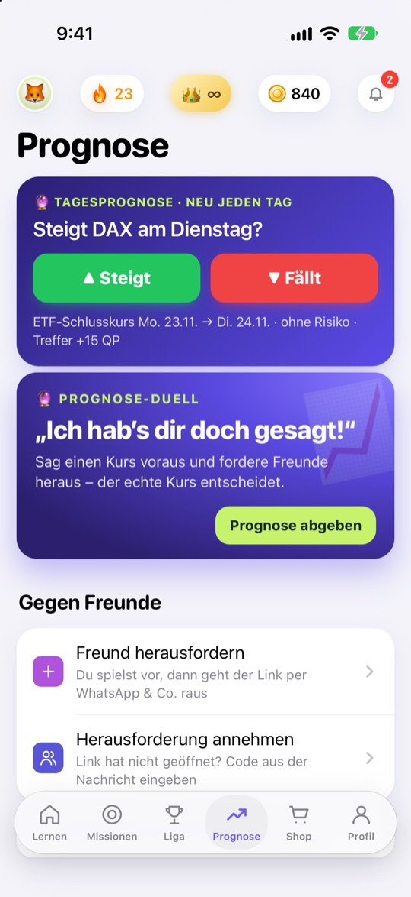

Grundlagen
Was ist der DAX? Einfach erklärt für Einsteiger
Jeden Abend in den Nachrichten: „Der DAX schloss mit einem Plus von 0,8 Prozent.“ Was dahintersteckt, wie der Index berechnet wird und was er nicht zeigt.

Der DAX (Deutscher Aktienindex) ist der wichtigste Aktienindex Deutschlands. Er bündelt die Kursentwicklung der 40 größten Unternehmen, die an der Frankfurter Wertpapierbörse gelistet sind, in einer einzigen Zahl. Steigt der DAX um 1 %, haben diese 40 Aktien im Schnitt um 1 % zugelegt, gewichtet nach ihrer Größe. Grundbegriffe wie Aktie, Index und Order erklärt der Artikel Börse lernen in 7 Schritten.
Der DAX im Steckbrief
| Merkmal | DAX |
|---|---|
| Start | 1. Juli 1988 mit 1.000 Punkten (Basis: 30. Dezember 1987) |
| Unternehmen | 40, seit dem 20. September 2021 (vorher 30) |
| Berechnung | sekündlich aus den Xetra-Kursen, an Börsentagen von 9:00 bis 17:30 Uhr |
| Art | Performanceindex: Dividenden werden rechnerisch wieder angelegt |
| Gewichtung | nach dem Börsenwert der frei handelbaren Aktien, höchstens 15 % je Unternehmen (seit März 2024) |
Wie kommt ein Unternehmen in den DAX?
In den DAX kommen die größten Unternehmen, die im Regulierten Markt der Frankfurter Börse notiert sind und Mindestanforderungen an Qualität und Rentabilität erfüllen. Entscheidend für die Größe ist der Streubesitz, also der Börsenwert der Aktien, die frei gehandelt werden. Pakete von Großaktionären zählen dabei nicht mit. Die Zusammensetzung wird regelmäßig überprüft. Wer zu klein wird, steigt ab, meist in den MDAX.
Unter dem DAX gibt es weitere Indizes der Deutschen Börse:
- MDAX: 50 mittelgroße Unternehmen, die nach dem DAX folgen.
- SDAX: 70 kleinere Unternehmen.
- TecDAX: die 30 größten Technologiewerte, die auch in einem der anderen Indizes stehen können.
Was die Punkte bedeuten
Der DAX startete mit 1.000 Punkten. Steht er heute bei einem Vielfachen davon, ist der Wert des gedachten DAX-Portfolios entsprechend gestiegen, Dividenden eingerechnet. Die Punktzahl allein sagt also nichts über „teuer“ oder „billig“. Wichtig ist die Veränderung in Prozent.
Weil große Unternehmen stärker gewichtet sind, bewegen sie den Index auch stärker. Fällt eine Aktie mit hohem Gewicht deutlich, kann der DAX sinken, obwohl die Mehrheit der 40 Werte im Plus liegt. Damit kein einzelnes Unternehmen den Index dominiert, ist das Gewicht je Aktie auf 15 % begrenzt.
Performanceindex: Warum der DAX „mehr“ zeigt
Die meisten großen Indizes der Welt sind Kursindizes: Sie zeigen nur die Kurse. Schüttet ein Unternehmen eine Dividende aus, sinkt der Kurs um diesen Betrag, und der Index fällt mit. Der DAX wird dagegen in erster Linie als Performanceindex berechnet: Die Dividenden werden rechnerisch wieder angelegt. Über Jahrzehnte macht das einen großen Unterschied. Punktestände von DAX und Dow Jones lassen sich deshalb nicht direkt vergleichen.
Der DAX ist nicht die deutsche Wirtschaft
Viele DAX-Unternehmen machen einen großen Teil ihres Umsatzes im Ausland. Der Index hängt deshalb stark an der Weltwirtschaft, an Wechselkursen und an einzelnen Branchen. Ein steigender DAX bedeutet nicht automatisch, dass es der deutschen Wirtschaft gut geht, und umgekehrt. Mittelständler und Familienunternehmen, die nicht an der Börse sind, fehlen ganz.
Wie man in den DAX investiert
Den DAX selbst kann man nicht kaufen, nur Produkte, die ihn nachbilden. Am bekanntesten sind DAX-ETFs: börsengehandelte Fonds, die alle 40 Aktien im richtigen Verhältnis halten. Wie ein ETF funktioniert, erklärt der Artikel Was ist ein ETF?.
Den DAX verstehen lernen
In InQuestly erklären die Gratis-Kurse „Börsen-Basics“ und „Investieren 101“, wie Indizes, Aktien und ETFs zusammenhängen. Im Prognose-Dezember gibt es an jedem Börsentag eine Tagesprognose, an einigen Tagen auch zum DAX: Steigt er bis zum nächsten Schlusskurs oder fällt er? Gewertet wird mit echten Schlusskursen, ohne echtes Geld. Warum solche Prognosen schwer sind und was man trotzdem daraus lernt, steht im Artikel Kann man Aktienkurse vorhersagen?.
Häufige Fragen
Wie viele Unternehmen sind im DAX?
Seit dem 20. September 2021 sind es 40. Vorher bestand der DAX 33 Jahre lang aus 30 Unternehmen.
Wann wird der DAX berechnet?
An jedem Börsentag sekündlich von 9:00 bis 17:30 Uhr auf Basis der Kurse im elektronischen Handelssystem Xetra.
Was bedeutet es, wenn der DAX um 1 Prozent steigt?
Die 40 DAX-Aktien haben im Schnitt um 1 Prozent zugelegt, gewichtet nach dem Börsenwert ihrer frei handelbaren Aktien. Einzelne Werte können trotzdem gefallen sein.
Ist der DAX ein Kursindex oder ein Performanceindex?
Der bekannte DAX ist ein Performanceindex: Dividenden werden rechnerisch wieder angelegt. Daneben berechnet die Deutsche Börse auch einen DAX-Kursindex.
Was ist der Unterschied zwischen DAX, MDAX und SDAX?
Der DAX umfasst die 40 größten Unternehmen, der MDAX die 50 folgenden mittelgroßen und der SDAX 70 kleinere Unternehmen.
Kann man den DAX kaufen?
Nicht direkt. Man kann aber Produkte kaufen, die ihn nachbilden, zum Beispiel einen DAX-ETF. Wie jede Aktienanlage schwankt auch ein DAX-ETF und kann deutlich fallen.
Wo kann ich den DAX ohne Risiko kennenlernen?
Zum Beispiel in InQuestly: Die Gratis-Kurse erklären Indizes und ETFs, und mit der Tagesprognose übst du ohne echtes Geld, Kursbewegungen einzuschätzen.
Dieser Artikel dient der Bildung und ist keine Anlageberatung. Beispiele sind vereinfacht und ohne Steuern dargestellt.